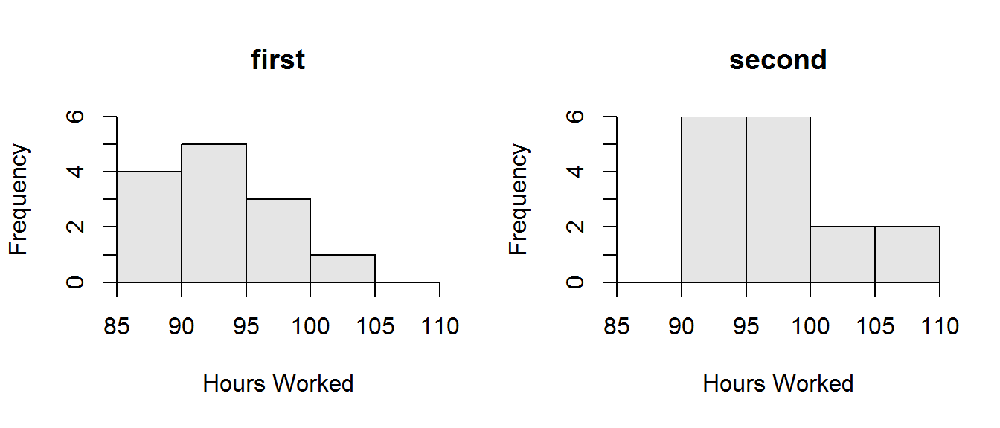

Popcorn Yield by Variety
- \(\alpha\) = 0.10.
- The \(H_{0}:\mu_{w}-\mu_{y}=0\) where \(\mu\) is the mean number of unpopped kernels, \(w\) represents white kernels, and \(y\) represents yellow kernels (thus, positive numbers represent more unpopped white kernels). The \(H_{A}:\mu_{w}-\mu_{y}\neq0\).
- A two-sample t-test is required quantitative variable (kernels unpopped) was measured on two populations (yellow and white) that were INdependent (there is no connection between any of the individuals of white corn and those of yellow corn) and two population means are being compared in the null hypothesis.
- The data appear to be part of an observational study with the individuals randomly selected.
- The populations are independent (there is no connection between any of the white and yellow kernels). The sample size (\(n_{w}+n_{y}\)=60) is \(\geq\) 40. Therefore, the test statistic computed below should reasonably follow a t-distribution with \(n_{w}+n_{y}-2\) = 58 df. The population variances appear to be equal because the p-value for Levene’s test of the homogeneity of variance test (given as 0.972) is “large” (i.e., \(>\alpha\)).
- The statistic is \(\bar{x}_{w}-\bar{x}_{y}\) = 4.267-3.567 = 0.70. The pooled sample variance is \(s_{p}^{2}=\frac{(30-1)4.456^{2}+(30-1)4.485^{2}}{30+30-2}\) = 19.99. The standard error of the statistic is \(SE_{\bar{x}_{w}-\bar{x}_{y}}=\sqrt{19.99\left(\frac{1}{30}+\frac{1}{30} \right)}\) = 1.154.
- The test statistic is t = \(\frac{0.70-0}{1.154}\) = 0.606 with 58 df.
- The p-value is \(0.5508\).
- The \(H_{0}\) is not rejected because p-value \(>\alpha\).
- There does not appear to be a difference in the mean number of unpopped kernels between the white and yellow varieties.
R Appendix
( pval <- 2*distrib(0.60,distrib="t",df=58,lower.tail=FALSE) )
Heating System Efficiency
- \(\alpha\) = 0.10.
- The \(H_{0}:\mu_{e}-\mu_{t}=0\) where \(\mu\) is the mean BTUs and the subscripts represent the two types of vents (positive numbers represent more BTUs used for houses fit with electric vent). The \(H_{A}:\mu_{e}-\mu_{t}\neq0\).
- A two-sample t-test is required because a quantitative variable (BTUs) was measured on two populations (electric and thermal vents) that were INdependent (the two types of vents are not connected at all) and two population means are compared in the null hypothesis.
- The data are part of an observational study where it is not obvious that the devices were randomly allocated to houses.
- The samples are independent (no vent was placed in the same house). The sample size (\(n_{e}+n_{t}\) = 90) is \(\geq\) 40. Therefore, the test statistic computed below should reasonably follow a t-distribution with \(n_{e}+n_{t}-2\) = 88 df. The population variances appear to be equal because the p-value for Levene’s test of the homogeneity of variance test (given as 0.996) is “large” (i.e., \(>\alpha\)).
- The statistic is \(\bar{x}_{e}-\bar{x}_{t}\) = 9.908 \(-\) 10.143 = -0.235. The pooled sample variance is \(s_{p}^{2}=\frac{(40-1)3.020^{2}+(50-1)2.767^{2}}{40+50-2}\) = 8.305. The standard error of the statistic is \(SE_{\bar{x}_{e}-\bar{x}_{t}}=\sqrt{8.305\left(\frac{1}{40}+\frac{1}{50} \right)}\) = 0.6113.
- The test statistic is t = \(\frac{-0.235-0}{0.6113}\) = 0.384 with 88 df.
- The p-value is \(0.7019\).
- The \(H_{0}\) is not rejected because the p-value \(>\alpha\).
- There does not appear to be a difference in average BTUs between houses equipped with the electrically and the thermally activated vent.
R Appendix
( pval <- 2*distrib(0.384,distrib="t",df=88,lower.tail=FALSE) )
Dioxins in Milk Cartons
- \(\alpha\) = 0.01.
- The \(H_{0}:\mu_{L}-\mu_{UL}=0\) where \(\mu\) is the mean dioxin level, \(L\) represents lined, and \(UL\) represents unlined cartons (thus, negative numbers represent lower dioxin levels in the lined cartons). The \(H_{A}:\mu_{L}-\mu_{UL}<0\) (representing that the lined cartons will reduce the dioxin level).
- A two-sample t-test is required because quantitative variable (dioxin level) was measured on two populations (cartons with and without foil) that were INdependent (the lined and unlined cartons are not connected at all) and two population means are being compared in the null hypothesis.
- The data appear to be part of an observational study; however there is no mention of randomization in this study although it would have been easy to randomly select cartons.
- The populations are independent (cartons could not be both linead and unlined). The sample size (\(n_{L}+n_{UL}\)=100) is \(\geq\) 40. Therefore, the test statistic computed below should reasonably follow a t-distribution with \(n_{L}+n_{UL}-2\) = 98 df. The variances appear to be UNequal because the Levene’s test p-value (\(<0.00005\)) is less than \(\alpha\). Even though the assumptions are not fully met in this case, I am going to continue with the analysis.
- The statistic is \(\bar{x}_{L}-\bar{x}_{UL}\) = 0.006 - 0.029 = -0.023 (Table 1).
- The test statistic is t = -17.541 with 98 df (Table 1).
- The p-value is \(<0.00005\) (Table 1).
- The \(H_{0}\) is rejected because the p-value \(<\alpha\).
- The lined milk cartons have lower levels of dioxin, on average, than the unlined cartons.
- A 99% upper confidence bound is -0.02 (Table 1). One is 99% confident that the mean dioxin levels is more than 0.02 MORE in the unlined than in the lined cartons.
Table 1: Results of 2-Sample t-Test for dioxin levels in lined and unlined milk cartons.
t = -17.5413, df = 98, p-value < 2.2e-16
99 percent confidence interval:
-Inf -0.02004091
sample estimates:
mean in group lined mean in group unlined
0.005860 0.029024
R Appendix
mc <- read.csv("data/MilkCartons.csv")
levenesTest(dioxin~type,data=mc)
( mc.t <- t.test(dioxin~type,data=mc,var.equal=TRUE,alt="less",conf.level=0.99) )
@
Low Grades in Math
- \(\alpha\) = 0.10.
- The \(H_{0}:\mu_{m}-\mu_{o}=0\) where \(\mu\) is the mean gpa, \(m\) represents math class, and \(o\) represents other classes (thus, negative numbers represent lower grades in math classes). The \(H_{A}:\mu_{m}-\mu_{o}<0\) (representing that the mean gpa is lower in the math classes).
- A two-sample t-test is required because a quantitative variable (gpa) was measured on two populations (math class and other class) that were INdependent (the two types of classes are not connected at all) and two population means are being compared in the null hypothesis.
- The data appear to be part of an observational study, probably without randomization as the students were not “forced” to take the certain classes.
- The populations are independent (no classes consisted of all the same students). The sample size (\(n_{m}+n_{o}\) = 51) is \(\geq\) 40. Therefore, the test statistic computed below should reasonably follow a t-distribution with \(n_{m}+n_{o}-2\) = 49 df. The population variances appear to be equal because the Levene’s test p-value (\(0.4384\)) is larger than \(\alpha\).
- The statistic is \(\bar{x}_{m}-\bar{x}_{o}\) = 2.353 - 2.353 = -0.155 (Table 3).
- The test statistic is t = -2.064 with 49 df (Table 3).
- The p-value is \(0.0222\) (Table 3).
- The \(H_{0}\) is rejected because the p-value \(<\alpha\).
- The mean gpa is lower in math classes than it is in the other classes.
- A 90% upper confidence bound is -0.057 (Table 3). Thus, one is 90% confident that the mean gpa of students in the math class is more than 0.057 LOWER than the gpa of students in the other classes.
Table 2: Results of 2-Sample t-Test for gpa in math and other classes at the University of North Carolina.
t = -2.0635, df = 49, p-value = 0.02219
90 percent confidence interval:
-Inf -0.0573284
sample estimates:
mean in group math mean in group other
2.353182 2.507931
R Appendix
mg <- read.csv("data/UNCGrades.csv")
levenesTest(gpa~class.type,data=mg)
( mg.t <- t.test(gpa~class.type,data=mg,var.equal=TRUE,alt="less",conf.level=0.90) )
Hours Worked by Medical Interns
- \(\alpha\) = 0.10.
- The \(H_{0}:\mu_{1}-\mu_{2}=0\) where \(\mu\) is the mean number of hours worked, \(1\) represents the first city, and \(2\) represents the second city (thus, positive numbers represent a larger mean for the first city). The \(H_{A}:\mu_{1}-\mu_{2}\neq0\).
- A two-sample t-test is required because a quantitative variable (hours worked) was measured on two populations (two cities) that were INdependent (there is no connection among individuals betwen the two cities) and two population means are being compared in the null hypothesis.
- The data appear to be part of an observational study with the individuals randomly selected.
- The populations are independent (all interns were not in both cities). The sample size (\(n_{1}+n_{2}\)=29) is \(<\) 40 but \(\geq\) 15. Histograms constructed for both groups (Figure 1) suggested a right-skewness but not an overly strong skew (this is very difficult to ascertain because of the small sample size). Therefore, the test statistic computed below should reasonably follow a t-distribution with \(n_{1}+n_{2}-2\) = 29-2 = 27 df. The population variances appear to be equal because the Levene’s test p-value (\(0.9195\)) is larger than \(\alpha\).
- The statistic is \(\bar{x}_{1}-\bar{x}_{2}\) = 92.96 - 92.96 = -4.78 (Table 4).
- The test statistic is t =-2.657 with 27 df (Table 4).
- The p-value is \(0.0131\) (Table 4).
- The \(H_{0}\) is rejected because the p-value \(<\alpha\).
- It appears that interns in the second city work more hours, on average, than interns in the first city.
- A 90% confidence interval is from -7.85 to -1.72 (Table 4). Thus, one is 90% confident that the interns in the second city work between 1.72 and 7.85 hours more than interns in the first city.

Figure 1: Histogram of numbers of hours worked by medical interns in two cities.
Table 4: Results of 2-Sample t-Test for numbers of hours worked by medical interns in two cities.
t = -2.6572, df = 27, p-value = 0.01307
90 percent confidence interval:
-7.847611 -1.716812
sample estimates:
mean in group first mean in group second
92.96154 97.74375
R Appendix
med <- read.csv("data/MedInternHrs.csv")
levenesTest(hrs.worked~city,data=med)
( med.t <- t.test(hrs.worked~city,data=med,var.equal=TRUE,conf.level=0.90) )
hist(hrs.worked~city,data=med,xlab="Hours Worked")
Corn Crop Yield
- \(\alpha\) = 0.10.
- The \(H_{0}:\mu_{i}-\mu_{s}=0\) where \(\mu\) represents the mean yield, \(i\) represents the insecticide plots, and \(s\) represents the sterile male plots (thus, positive numbers represent a larger yield in the insecticide treatments). The \(H_{A}:\mu_{i}-\mu_{s}\neq0\).
- A two-sample t-test is required because a quantitative variable (yield) was measured on two populations (insecticide and sterile male plots) that were INdependent (there is no connection between plots that received the insecticide and those that received the sterile males) and two population means are being compared in the null hypothesis.
- The data appear to be part of an experimental study with two treatments and 40 replicates. Plots were randomly allocated to treatments.
- The populations are independent as there is no connection between the two types of plots. The sample size (\(n_{i}+n_{s}\)=80) is \(\geq\) 40. Therefore, the test statistic computed below should reasonably follow a t-distribution with \(n_{i}+n_{s}-2\) = 80-2 = 78 df. The variances appear to be equal because the Levene’s test p-value (\(0.8862\)) is larger than \(\alpha\).
- The statistic is \(\bar{x}_{i}-\bar{x}_{s}\) = 100.150-100.150 = -9.375 (Table 5).
- The test statistic is t = -7.112 with 78 df (Table 5).
- The p-value is \(<0.00005\) (Table 5).
- The \(H_{0}\) is rejected because the p-value \(<\alpha\).
- It appears that yield is greater, on average, in the plots with the sterile males as compared to the plots with the insecticide.
- A 90% confidence interval is -11.57 to -7.18 (Table 5). Thus,one is 90% confident that the mean yield in plots with sterile males is between 7.18 and 11.57 bushels HIGHER than in plots with the insecticide.
Table 5: Results of 2-Sample t-Test for yields of corn between fields treated with an insecticide and sterile males.
t = -7.1115, df = 78, p-value = 4.829e-10
90 percent confidence interval:
-11.569445 -7.180555
sample estimates:
mean in group insecticide mean in group ster.males
100.150 109.525
R Appendix
yld <- read.csv("data/CropYield.csv")
levenesTest(yield~group,data=yld)
( yld.t <- t.test(yield~group,data=yld,var.equal=TRUE,conf.level=0.90) )
Death Anxiety and Organ Donation
- \(\alpha\) = 0.01.
- The \(H_{0}:\mu_{o}-\mu_{n}=0\) where \(\mu\) is the mean DAS, \(o\) represents the organ donors, and \(n\) represents the non-organ donors (thus, positive numbers represent a higher anxiety among organ donors). The \(H_{A}:\mu_{o}-\mu_{n}\neq0\).
- A two-sample t-test is required because a quantitative variable (DAS) was measured on two populations (donor or not) that were INdependent and two population means are being compared in the null hypothesis.
- The data appear to be part of an observational study where it is not clear if random samples were taken or not.
- The populations are independent because the individual cannot both be a donor and a non donor. The sample size (\(n_{o}+n_{n}\) = 94) is \(\geq\) 40. Therefore, the test statistic computed below should reasonably follow a t-distribution with \(n_{o}+n_{n}-2\) = 94-2 = 92 df. The variances appear to be equal because the Levene’s test p-value (\(0.0206\)) is larger than \(\alpha\).
- The statistic is \(\bar{x}_{o}-\bar{x}_{n}\) = 5.52-7.42 = -1.91 (Table 6).
- The test statistic is t = -2.622 with 92 df (Table 6).
- The p-value is \(0.0102\) (Table 6).
- The \(H_{0}\) is not rejected because the p-value \(>\alpha\).
- There does not appear to be a significant difference in average anxiety about death between organ donors and non-organ donors, at least at the 1% level.
Table 6: Results of 2-Sample t-Test for death anxiety score between organ and nonorgan donors.
t = -2.6218, df = 92, p-value = 0.01023
99 percent confidence interval:
-3.823465050 0.006189687
sample estimates:
mean in group organ mean in group non.organ
5.516000 7.424638
R Appendix
das <- read.csv("dta/DeathAnxiety.csv")
das$donor1 <- factor(das$donor,levels=c("organ","non.organ"))
levenesTest(DAS~donor1,data=das)
( das.t <- t.test(DAS~donor1,data=das,var.equal=TRUE,conf.level=0.99) )
Pork Quality
- \(\alpha\) = 0.05.
- The \(H_{0}:\mu_{1}-\mu_{2}=0\) where \(\mu\) is the mean backfat thickness and the subscripts represent the two diets (thus, positive numbers represent more backfat thickness for pigs fed diet 1). The \(H_{A}:\mu_{1}-\mu_{2}\neq0\).
- A two-sample t-test is required quantitative variable (backfat thickness) was measured on two populations (different diets) that were INdependent and two population means are compared in the null hypothesis.
- The data are part of an experimental study where the pigs were randomly allocated to treatments.
- The samples are independent (no pig was fed both diets). The sample size (\(n_{1}+n_{2}\)=25) is \(<\) 40 but \(\geq\) 15 and the sample distributions (i.e., histograms) are not strongly skewed. Therefore, the test statistic computed below should reasonably follow a t-distribution with \(n_{1}+n_{2}-2\) = 22 df. The population variances appear to be equal because the p-value for Levene’s test of the homogeneity of variance test (given as 0.532) is “large” (i.e., \(>\alpha\)).
- The statistic is \(\bar{x}_{1}-\bar{x}_{2}\) = 3.420-2.989 = 0.431. The pooled sample variance is \(s_{p}^{2}=\frac{(12-1)0.295^{2}+(12-1)0.375^{2}}{12+12-2}\) = \(0.1138\). The standard error of the statistic is \(SE_{\bar{x}_{1}-\bar{x}_{2}}=\sqrt{0.1138\left(\frac{1}{12}+\frac{1}{12} \right)}\) = 0.1377.
- The test statistic is t = \(\frac{0.431-0}{0.1377}\) = 3.13 with 22 df.
- The p-value is \(p=0.0049\).
- The \(H_{0}\) is rejected because the p-value \(<\alpha\).
- There does appear to be a difference in average backfat thickness between pigs fed the two diets.
- A 95% confidence interval is warranted in this situation with a \(t^{*}\) of \(\pm\) 2.074. Thus, 0.431 \(\pm\) 2.074*0.1377, 0.431 \(\pm\) 0.286, and (0.145,0.717). One is 95% confident that the difference in mean backfat thickness is between 0.145 and 0.717 cm. Thus, the mean backfat thickness on all pigs fed diet 1 is between 0.145 and 0.717 cm greater than the mean backfat thickness of all pigs fed diet 2. Thus, diet 2 produces higher quality pork.
R Appendix
( pval <- 2*distrib(3.13,distrib="t",df=22,lower.tail=FALSE) )
( tstar <- distrib(0.025,distrib="t",type="q",df=22,lower.tail=FALSE) )